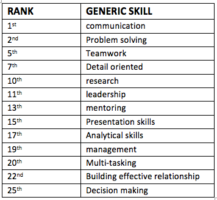
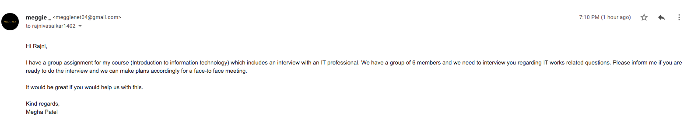
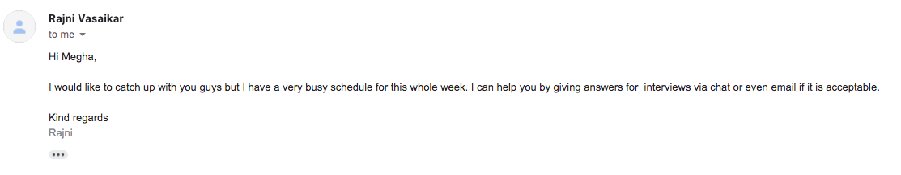
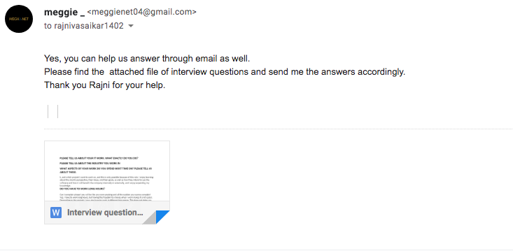
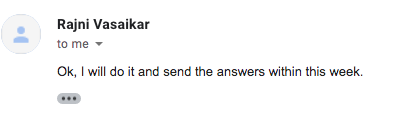
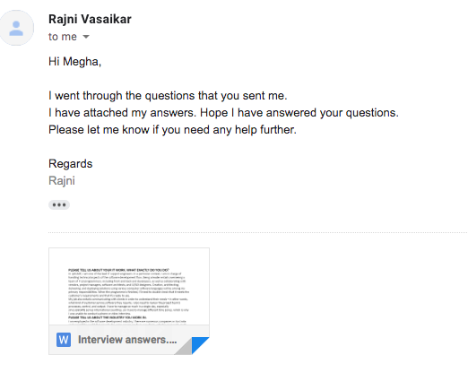
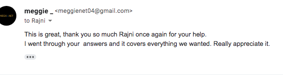

Team Profile
Meet team Orion
Click on any name to take you to their personal profile.
We are Group 11
Welcome to our website
Click on any name to take you to their personal profile.
My Student Number is S3858020. While pursuing my desired degree, I am managing a full-time CSR supervisor job. When I'm not working or studying, you'll most likely find me reading or exploring lookouts with friends.
Technology has the facility to impact lives at a calibre and scale that has never been realized in the history of mankind. The conception that something I engender can impact someone across the world now, or in the future is what drives my passion for Technology. IT has always been a great source of regalement for me since I was introduced to coding in primary and secondary grade. My passion for web development and software made me select information technology as a unit in year 9 and 10. I was able to gain rudimental skills and understand the mechanism.
Most of my IT experience is from self-education and working in different field and utilizing various software. Despite my lack of experience, I am passionate about programming and development. I especially enjoy the puzzle-like frameworks that go into designing a program. I really love networking, as well as all the technical information that fall under the larger umbrella of networking. I dote experimenting with different languages of computer, so I customarily spend my leisure time inscribing my own code or edifying myself an incipient coding language from rudimentary level.
To explore my learning style, imagination, personality, and personal values, I took three separate types of tests. My personality was classified as a logician in a 16-personality survey. I'm a visual learner, which was demonstrated by my learning style. My score on the test of imagination was 70.26. Both of these assessments measured my skills and stressed my characteristics. It helps me to see my current self and how I can change to become a better version of myself.
The rational personality is relatively unusual, accounting for just 3% of the population. I am proud of my ingenuity and imagination, as well as my unique insight and strong intellect. Learn from the past, live in the moment, and hope for the future. Albert Einstein once said, "The important thing is not to avoid questioning." When it comes to a project or a job, I like to look for some connections and see if I can create an innovative product or concept. New challenges pique my interest.
I prefer reading or seeing pictures when it comes to learning styles. The same was mentioned in my learning style, indicating that I am a visual learner. In the creativity test, I received a score of 70.26, which is above average. This test describes various metrics across eight different sectors. The results indicate that I have the ability to abstract concepts from ideas and create associations between things that don't seem to be related at first.
No two people are alike; each has its personality and characteristics. Working in a group helps you to pool your thoughts and look at things from multiple angles. Based on the test results, I believe I will only have a few questions to fully comprehend and visualize the issue. When working together, people will disagree, but my skills will be useful during this difficult period. To keep the team together, I'll have to use my abilities to show both the positive and negative sides of the problem or solution. My ability to abstract concepts would aid the team in generating ideas. We can accomplish a lot as a team, and my curiosity will help us do so. Overall, my attitude and creative abilities benefit the team.


My Student Number is S3909591. I love creativity and pursue many different hobbies to tame my hunger to express myself, ranging from music to drawing. Guitar, Ukelele, and piano would be my current go-to instruments. Originally from Bangladesh, I moved to Australia in 2013 at the age of 11. I learned most of my English through movies and TV-shows I watched as a child and was happy to come to Australia.
My passion for IT stems from its creative aspect, which is also helped by the fact I love learning and discovering new things.
Our current society is shaped by IT and is rooted in almost every industry; my eventual goal is to start a company or companies which changes our way of living using emerging technologies in IT. As an 8-year-old on an expedition through the vast collection of software on our family computer, I discovered Adobe Dreamweaver. I created quite a few websites using gifs I found on the internet and pictures of art and other things which I made.
I studied software development and computing in VCE and learned to create new software using visual basic. We learned the basics of python, a language that I love very much and find a delight to use. I have some IT experience in terms of “professional” work, such as helping my mum set up her shop on Amazon, Etsy, eBay, and her Shopify website. Other than that, I have no professional experience in IT.
The results of the Myers Briggs Type Indicator show commanders are natural-born leaders. People with this personality type embody the gifts of charisma and confidence, and project authority in a way that draws crowds together behind a common goal. However, Commanders are also characterized by an often-ruthless level of rationality, using their drive, determination and sharp minds to achieve whatever end they’ve set for themselves. Perhaps it is best that they make up only three percent of the population, lest they overwhelm the more timid and sensitive personality types that make up much of the rest of the world – but we have Commanders to thank for many of the businesses and institutions we take for granted every day. My strength would be being efficient, energetic, self-confident, strong-Willed and strategic Thinkers. Meanwhile my weakness is that I am stubborn and dominant, intolerant, impatient and arrogant.
I believe these tests support my existing believes about my skills in working in a group. I work better as a leader than being led. I am happy to work in a group, but I feel the bigger picture, which allows me to be a better leader than being occupied by small details that eat away my motivation and patience. When creating a group, I would need to keep in mind that the members are creatively complementary. They would also need to be willing to be led to solve any problem our group face.

My student Number is S3910962. I am currently opting to fulfill the master’s degree in teaching. IT has been playing an influencing role for the students as well as teachers that assist in better understanding. I have been interested in taking up the ICT course which would help me in future growth. I graduated with Bachelor of professional Accounting on 2018. I speak English, Nepali, Hindi. My hobbies are Reading books and exploring new places.
It is evident from my information shared in the above section that I do not have any background in IT. This course is taken up by me as I want to pursue a master’s degree in teaching and currently, ICT is transforming the learning environments. In this regard, my interest in the course is mainly developed from the point that having knowledge on this would enhance the education quality.
The teachers also need to be further updated with the needed technical skills and thereby enhance the teaching skills. I don't have any experience or background in IT, so it is all about the role of ICT in improving education that compelled me to take up the course. I have taken up admission in RMIT as the university offers the course and prepares for success. During my studies, I will be exploring and learning new concepts, ideas as well as equipping myself with the required knowledge.
The first test talks about the kind of personality exhibited by me which is virtuosos that seeks for exploring everything with cool rationalism as well as spirited curiosity. The personality test also speaks that the decision made by such people stems from a point of practical realism.
The second test illustrates the learning style which is Auditory (Schilling et al. 2020). With this learning style, I try to learn things by reading out loud and have an easier time in terms of understanding instructions.
The third style illustrates that I am more inclined towards agreeableness, Neuroticism as well as openness. The tests and assessments have been enlightening and have created an accurate image of my personality in my own mind. This has helped me in analysing the areas that I am lacking and significant improvements in the field of confidence, ways of directing the mental energy as well as the ways in which I would react to the situations. terms of team formation some of the key qualities such as agreeableness, tactics in the decision making, approach towards work, and openness shall be of great help (Kyllonen and Kell, 2018).


My student Number is S3909048. I come from Nepal. My hobbies are traveling, cooking delicious Nepalese cuisines, watching movies, and reading romantic novels.
I have studied Accounting my whole life but my interest in IT grew up when I first came here in Australia when I realised that it plays a significant role in accounting or in any other sectors. IT has enabled companies to develop and use computerised designs to collect and store financial transactions rather than storing in hard books.
There is not a particular event or person that sparked my interest in IT, but I wanted to develop knowledge and skills in technology so that it would benefit me personally and professionally. As I do not have any background in IT whatsoever, I saw it as an opportunity to learn and grow new skills when I came around this course.
I am currently studying Master of Teaching in Alphacrusis College. Even though I wanted to study IT, I did not want to get separate degree on IT. Hence, I decided to go with Open Universities where I can study a single subject online at my own pace.
These tests were so fun to do yet the results actually who I really am. Every question in all the three tests were precisely put together to really show my inner personality. The results show that I am introvert, visual learner and creativity is one of my strength. These results indicate that my behaviour is shy in a team. I look for ways to share my creative ideas with other team members. I try to learn by pictures and visuals rather than hear things. When forming a team, I would like to be in a team where my team members have different personalities than me so that they can compensate my drawbacks. I think it will be valuable for the team if I can learn something others behaviour and learning styles.


My student Number is S3909823. I am a creative and innovative person. I am a quick learner and can give the actual shape to my imaginations. I have interests in sketching and reading. I have master’s in Professional Accounting and Running master’s in teaching (Secondary) and Diploma of Information Technology. I speak English, Nepali and Hindi.
I find programming part interesting in IT. When I was doing programming language in my Bachelor’s in Business Administration as a part of curriculum, my desire to learn more about programming language grew. I joined web designing course and learnt Html, CSS, Dreamweaver and Java script there. Being in management field, I never found the programming language uninteresting. For, IT is the growing field and have wide scope in careers, I can’t be separated from aspects of IT despite of any profession I choose.
Having completed my master’s degree, I have decided to satisfy my interest in IT by doing Diploma of Information Technology at RMIT. My knowledge about IT will always help me to excel in my career. I expect to develop an IT base of my knowledge to help prosper in my career no matter which profession I choose as IT is an integral part in all fields.
The result of these three tests reflects me that I am more of an extrovert person and sensitive to other people’s feelings and have a mix learning approach. In my opinion, I can fit in the job which requires teamwork and communication. Having the ability to lead and go well in a team contributes towards team effectiveness. My organised and decisive nature will help the team to reduce stress and maintain harmony among the team members. Attention to detail and through learning and team communication will help the team to achieve accuracy. I should always consider my personality traits so as not to affect the team but to motivate the teamwork and team proficiency. I should respect others’ feelings and views and encourage communication before and after making decisions.
Type: The Protagonist Traits:
Extraverted: 68% Intuitive: 68% Feeling: 63% Judging: 75% Assertive: 65%
Role: Diplomat
Strategy: People Mastery
| Factor | Factor Label | Percentage |
|---|---|---|
| I | Extroversion | 83 |
| II | Emotional Stability | 74 |
| III | Agreeableness | 93 |
| IV | Conceitedness | 89 |
| V | Intellect/Imagination | 83 |
Visual: 13 Aural: 7 Read/Write: 13 Kinaesthetic: 12
My student Number is S3893774. I am a Pakistani Australian by nationality and Yousufzai Afghan or Pathan by ethnicity. I have done bachelors in business administration. I am qualified and worked in a number of areas in Australia as well as overseas i.e. real estate, hospitality, OH&S, manufacturing, transport and warehousing. Beside my education and employment experiences I have owned and managed my personal businesses named SMG Pty ltd and Instant Computing solutions Pty ltd. My hobbies and interests include gardening, travelling, exploring different cultures and cuisines, enjoying nature and photography. PlayStation gaming. Cricket and badminton are my favourite sports.
My interest in IT has a very unique background which is related to my dear father. My father was a banker was amongst the very first few customers in who bought a computer system in early 1990’s. Our first computer system had 386 MHz CPU with around 4 MBs of RAM and flexible floppy disk as ROM. I was updating my skills and knowledge with latest trends and updates in new operating systems, applications and IT systems. It was from this childhood passion that an appealing IT interest for career related future was born which I followed through informal learning and practices in past by setting up and managing my own IT business named as Instant computing solutions.
I achieved moderate experience in different areas of IT from software, hardware and to setting up small networks etc. I would like to explore and broaden my knowledge of IT in these specific areas databases, networking, Internet security, cloud services, software and hardware. I would like to further enhance and refine my IT skills in this flourishing and demanding industry.
According to Myers-Briggs Personality test my personality type is Defender. It totally relates to the person I am. It means I can be a very good team member as these types of personalities are very reliable and dedicated. They are at their best in a harmonious, well organized, calm and slow-paced work environment, and feel motivated if tasks are clearly defined.
According to Leaning Style test I am a visual learner. They notice small details. They are good planners, decision makers. They have a good memory and sense of direction. They have good research and problem-solving skills. I totally agree with this test result as I find it hard to concentrate for long when something is said without visual aids. I retain knowledge gained through visuals longer.
According to the results of Big Five Personality test I scored the highest on factor III I.e., agreeability which depicts that I am a friendly and optimistic person. For a good team member, it is extremely important to be friendly and easy going plus optimism can always help keep the moral of the group high. Which shows I can be a good addition to any team or group I work with.
Factor IV and V are also high enough which means I will be one of the responsible and careful members of the team. Which can help reduce the risk of mistakes and failure and will help keep things on track and organized which is very essential for any team to achieve their goals and objectives effectively and efficiently. I tend to be open to new experiences which can help in the creative part of tasks assigned to any team.
On the other hand, I scored lesser on Factor I and II. Which means I need to be more emotionally stable to deal with any conflict arising in the group so that my performance won’t be affected. I also tend to be an introvert who again can be a drawback for working in a group as this trait reduce one's chances of instant bonding with other team members.
I agree with most of the test results.


Tech leads are in charge of managing the technical aspects of the software development process in a specific context. A good tech lead is a software engineer who enables the team to work with quality and ensures the success of distributed solutions.
Prioritizing user requirements, overseeing system upgrades, and researching new tools are all responsibilities of an IT Analyst. Pratibha will need to be highly analytical and able to understand business needs in this role. Excellent communication and problem-solving abilities are required, which are also aspects of my roles and responsibilities. The ideal job will necessitate collaboration with an IT analyst to discuss the project and the risks to the business and clients.
Suruchi Shrestha's ideal job would be to become an IT teacher who is up to date on the latest IT trends and enjoys sharing their knowledge with their students. Students learn the fundamentals of technology and how to apply basic information technology tools in their daily work and lives. They teach in elementary, middle, and high schools. My ideal job and her ideal job do intersect at some point. She must be informative, as must I, and we must both teach (for me to staff) and learn new things on a daily basis.
A technical manager is an expert who leads a team of technical staff in a software or technology company. I must guide the software development or software development team and check out specific topics such as software development, design tasks and product versions. IT managers, who are ideal for Malak and Shruti, determine the company's IT needs and are responsible for implementing computer systems that meet the requirements of the business information system.
I will be expected to have proficient experience with software development and a significant knowledge of technology, as well as to be adequately prepared to lead a group and collaborate with others. I will be in charge of assisting their colleagues with the technical aspects of their jobs, such as coding and programming. I may present new projects to their group and investigate any problems that arise.
Rawnak as a chief technology officer (CTO) will be in charge of managing an organization's technical aspects to ensure that they are in line with the company's growth goals. They will also manage technical resources and ensure that they are geared towards technological advancement. On the other hand, I will in charge of team leadership and technical direction alignment. Establishing a technical vision, resolving technical disagreements, and managing the technical quality of team deliverables are all part of providing strong technical direction. Rawnak's and my responsibilities are nearly identical and overlap.
IT is a vast discipline and has wide range of career aspects. I choose to become an IT SOX Compliance analyst whilst my other team members choose to become IT manager, Chief technology officer, technical lead and an IT teacher.
My dream job IT SOX Compliance Analyst is a blend of both finance and IT. It is an IT role but within the rules and regulation of Sarbanes- Oxley Act which protects the rights of shareholders, stakeholders and general public. This role does not only require the knowledge and experience in IT, but also requires the experience, in accounting, auditing, and SOX compliance framework. I chose a blend of these subjects because of having background.
Technical lead is directly related to IT as the role require to lead and organise the IT team. Being a technical lead, Megha will require to lead the technical experts in a company which looks after software development, design and product launches. Comparing with my ideal job, Megha will require more leadership skills and technical skills than me. We both will have to provide technical support. We both may require to do codings and communication skills is vital in both job titles. While technical lead is purely an IT work, my job is the blend of finance and IT.
IT teacher is also a blended career of IT and education. This role requires an up-to date knowledge about IT trends and developments along with the syllabus requirements. Comparing with my role, Suruchi’s role is different. I will need to work with IT and Finance department, but Suruchi will need to deal with students and her colleagues. She may need to have good programming skills to teach other students. She needs strong leadership qualities than me to influence her students’ learning. I will have to work in a team, whereas, Suruchi can work independently.
: Similar to my job, IT manager is also the mix of IT and management. This role requires a combined skill set of IT, planning, staffing, organising, leading and controlling the organisational resources. As managers, Shruti and Malak will have to look after the company’s electronic networks and resources of IT department. They may have to deal with several vendors and customer companies to contract their IT services. Being a manager needs high skills sets and experience. I personally, think that an IT manager is a challenging role. Comparing to their role, my responsibility as an IT SOX compliance analyst will be limited to IT and Finance. They require more experience and skill sets than my job requires.
As a Chief Technology officer, Rawnak will be the in charge of technology or engineering branch. It is the high rank and Rawnak will need to harness through a series of job levels before reaching to that position. While he will need to exercise higher level of rights and responsibilities, I may not require that. But we both need to have idea about management and should possess good communication skills.
Unlike the other members of my group, I am taking this course because I want to obtain a Master's degree in education, and ICT is actually changing learning environments. In this respect, my curiosity in the course stems mostly from the fact that knowing more about it would improve the standard of education. IT teachers who are effective keep up with the new IT patterns and enjoy sharing their experience with their students. Students learn about technology concepts and how to use simple information technology techniques in their jobs and lives from IT teachers. They instruct students in primary, middle, and high school
Her ideal job is a technical lead at a software or technology company. They lead a business development or software engineering team and examine specialised topics such as software development, design tasks, and product launches on a routine basis. Whereas, only basic knowledge should be covered by an IT teacher such as, Computers, laptops, printers, routers, projectors, and electric whiteboards, Photoshop, Illustrator, and grade book applications and networks to ensure that all of the computers in the computer lab are connected and functional.
She dreams of working as a SOX Analyst. Sarbanes Oxley Analysts introduce and coordinate procedures in order to ensure that Sarbanes-Oxley standards are met. Gathers, analyses, and publishes data on financial statements internal management systems. Whereas, IT teachers have to pay attention to trends in their industry. This involves continuing education and professional development courses, as well as self-learning.
Looking at the ideal careers of my group members, I discovered that Malak Khan and Shruti Shrestha both want to be an IT manager. IT administrators are in charge of an organization's electronic networks and IT departments. To take on a senior position, you'll usually need several years of experience in the industry, and an IT management master's degree will help. Whereas, comparing my dream job with them, a bachelor's degree in education with a specialisation in information technology is required for an IT teacher.
He wants to be a chief technical officer. The Chief Technology Officer (CTO) is the company's highest-ranking technology executive and is in charge of the technology or engineering branch. They create processes and protocols and use automation to improve external-facing goods and services. Whereas, IT teacher instruct students in primary, middle, and high school about technology concepts and how to use simple information technology techniques.
He wants to be a chief technical officer. The Chief Technology Officer (CTO) is the company's highest-ranking technology executive and is in charge of the technology or engineering branch. They create processes and protocols and use automation to improve external-facing goods and services. Whereas, IT teacher instruct students in primary, middle, and high school about technology concepts and how to use simple information technology techniques.
Her ideal job is digital tech lead. She will be responsible for the technical architecture and software development. Her ideal job and my ideal job are similar in terms that we need to manage our teams and deliver our projects. We both need to be expert in programming language and managing skills.
Her ideal job is IT teacher. She is pursuing Master of Teaching and hopefully wants to teach IT in schools. Her ideal job is completely different than mine. She can become IT teacher as soon as she finishes her master’s degree with minimum experience. However, I will have to work for 8 years to be eligible for my ideal job. Her ideal job is not in the list of Burning Glass.
His ideal job is to become an IT Manager in a reputed firm. His ideal job is same as mine. His job has responsibilities like maintaining technological needs of the company and managing IT teams which are similar as responsibilities of my ideal job.
His ideal job is Chief Technology Officer (CTO). This position is expected to manage staffs like an IT manager. Our ideal jobs are similar in that sense. However, CTO is the external face of the organization and works with partners to better the technology the organization sells. But IT manager looks after the works inside the organization.
IT Manager
Ideal job of Megha Patel is a technical lead who is an expert that manages a group of technical staff at a software or technology organization. They regularly lead software development or software engineering team and investigate specialized issues that include software development, designing assignments and product releases. While an IT manager which is an ideal job of mine (Malak Khan) determine the IT requirements of the business and are responsible for implementing computer systems to meet the business information system's needs.
A technical lead requires to have a proficient experience with software development and a significant knowledge of technology, yet they will be adequately equipped to feasibly lead a group and work along with others. A technical lead is responsible for assisting their colleagues with the technical parts of their positions, like coding and programming. They may describe new projects to their group and investigate any issues that occur.
Whilst Prabitha K C ideal job is IT SOX Compliance analyst who is mainly responsible for evaluating information technology (IT), platforms, and operating procedures in accordance with established standards for efficiency, precision, security and risk mitigation; as well as, explain regulations as they apply to information systems, platforms, and IT operating processes, practices and procedures; and, determines and proposes enhancements to current risk management controls. (IT Compliance Analyst job in San Diego at General Atomics | Lensa n.d.) The job of compliance analyst is limited to policies and procedures while IT manager is responsible for the overall management with the help of IT.
Suruchi Shrestha’s ideal job is to become an IT teacher who needs to stay aware of the most recent IT trends and love to share their knowledge with their students. Students are taught the basics of technology and how to use basic information technology tools in their day-to-day work and lives. They instruct at the elementary, middle, and high-school level. There is hardly any comparison possible between my ideal job I.e., IT manager and her ideal job of becoming an IT teacher because management and teaching are completely different fields. The only thing that is common between the two is the knowledge of IT.
Whilst ideal job of mine (Malak Khan) and Shruti Shrestha is being IT managers. The position of IT manager emerged from the IT department to be "the face" for an organization' internal teams and the units it serves. It is the IT manager’s job to keep consistent business measures running effectively so the organization is productive and runs smoothly.
IT managers needs information on IT systems and processes however it's not important for them to be a system specialist themselves. Their job is to understand what technology and IT can help the effective running of an organization. Incase if certain process requires enhancing or if automation can streamline the back office, then the IT managers should be informed in first place.
In contrast ideal job of Muhammad Rawnak is Chief technology officer who looks outwards and regularly comes from a background of an inventive technologist. The CTO's external focus directs them in line of client needs and how the business can deal with accomplice organizations who provide solutions based around the business core technology. In other terms, IT managers oversees IT infrastructure and the CTO deals with the business technology architecture. The individual improves the organization's capacities by making sure the technology it provides can fulfill the business needs.
My ideal job is to become a CTO (chief technology officer) which is a management level job overlooking all technical aspects of a business or organisation. Through a levelled approach this position is responsible for every employee dealing with anything technical. A CTO (chief technology officer) reports directly to the CEO( chief executive officer). To become a CTO (chief technology officer) I would need to first get a few jobs and gain experience. This career path could be fast tracked if I studied a bachelor’s course in business administration while the other technical knowledge could be gained through technical jobs.
Technical lead is a job rooted in IT, this job requires the management and recruitment of IT team/s in order to develop software, design and launch products. Technical lead requires a more technical knowledge than a Chief technology officer as the technical lead deals directly with the development. My ideal job requires a more outlooking and big picture developments and to lead a larger group of people than a technical.
Pratibha as chosen IT SOX Compliance analyst as their job which has both a finance and IT aspect. This job mainly requires the analysis and auditing of a business to make sure they comply with the rules and regulation of Sarbanes- Oxley Act. This role does not require prior experience or knowledge in IT. In contrast to my dream job Pratibha’s dream job, SOX compliance analyst, my ideal job does not require prior knowledge in finance or rules and regulation of the Sarbanes- Oxley Act but some prior knowledge in the innerworkings of IT infrastructure and design. However, similar to my ideal job, IT SOX compliance analyst also requires management and communication skills.
IT teacher is an important job in IT industry, teaching more people IT related skills helps people in all industries and most importantly the IT industry which is rapidly growing and require more people with IT skills. An IT teacher similar to a CTO requires general skills such as planning, communication skills and organizational skills. In terms of IT skills IT teachers also require troubleshooting, problem solving and leadership skills.
IT manager is a very technical job with some managerial aspects. An IT manager requires IT skills such as planning, staffing, organising, leading and maintaining organisational resources. IT managers mange an organisations network and manage how resources are shared and used. This job is similar to CTO as it deals with managing a large network and group of people but it only deals with the technical side of things.
GROUP IDEALS JOBS:
The ‘required skills set’ from the ideal job of the group are ranked as follows according to demand of employers:
Ideal job of group members: Technical Lead, Chief Technology Officer, IT SOX compliance analyst, IT manager, and an IT teacher. Technical Lead is the most in demand job according to the industry data. Although, IT instructors and managers are not far behind and have great demand.
In most industries communication skills has the largest demand and the IT industry is no exception. IT managers and CTO’s (chief technology officer) have a similar job. CTO deals with the business and technical side of things, a CTO manages employees through a levelled approach where groups are divided with leaders and can even have subdivisions. A Technical lead similarly deals with managing a group but deals with them directly, this requires general skills organisation and decision-making skills. This job also requires IT related skills such as project management, business management, relationship management and customer service skills. CTO requires the most amount of general and IT skills. Similarly, technical lead demands more of communication skills, leadership, teamwork, technical support, software engineering. similarly, technical support skills, communication skills, teamwork, writing skills and troubleshooting skills on are highly demanded skills for Technical Lead.
IT Lead
Tech Leader jobs are the most desired job ranking first in the list of Burning Glass.
Tech Leader are required to cover a board range of technical and non-technical skills. IT skills on Burning Glass would suggest AWS, JavaScript Programming, DevOps, Microsoft Azure, Java Programming, Software Development, Node.JS, Microservices, API, C# Programming and Web development.
Tech Leader are required to cover a board range of general professional skills. Tech Lead would require Communication Skills, Leadership, Management Skills, Project Management, Crisis Management, Problem solving, Budgeting, Multi-tasking, Repo building and Analytical and research skills.

Overall I found the information on Burning Glass to be narrow and yet scattered. There was not enough information in the report to remotely change my opinion. Additional the fact that a lot of the information is based on resource points such as mentions in online posts it would be interesting to see if they had anything in place to stop the information from being scewed.
The job titles of my group members are: Technical Lead, Chief Technology Officer, IT SOX compliance analyst, IT manager, and an IT teacher. As per my finding, technical lead is most demanded job in the market as compared to other team member’s ideal jobs. However, there is a good demand of IT instructors and managers too.
Being in an IT field communication skill is the most demanded skill in all of our job roles. IT manager requires more of organising, planning and decision-making skills. In terms of IT skills, IT managers’ project management, business management, relationship management, customer service skills are highly demanded. To be a CTO, one should be very competent and possess almost all the professional as well as IT skills. Similarly, IT SOX compliance demands more of technical support skills, communication skills, teamwork, writing skills and troubleshooting skills. Likewise, communication skills, leadership, teamwork, technical support, software engineering and so on are highly demanded skills for Technical Lead.
IT specific skills in high demand from employers which are not required in my Ideal Job, IT SOX Compliance analyst:
After going through Burning Glass data, I am still firm on my ideal job, IT SOX compliance analyst. Being an accounting and IT graduate, I will love to work where skills and expertise from my both backgrounds can be used. I have always loved accounting and finance. In this technological era, no any career is separable from IT. So, I decided to acquire knowledge in IT and joined this degree. Knowing and getting chance to learn about IT I feel fascinating to think about a career in both IT and accounting at once. So, IT SOX compliance analyst is perfect job for me. Also, this role requires all the skill sets which are highly in demand of the employers. So, there is a favourable chance that I will boom in this sector.
IT Teacher
IT Teacher is not in the list of the most demanded jobs according to burning glass.


Since looking at the data from Burning Glass, I am not convinced what my dream career is because information technology instructor isn't on the list of most valued jobs. However, since I am pursuing a master's degree in education, I would always like to become a teacher. I have no experience or history in IT, so it is the role of ICT in improving education that compelled me to enrol in this course.
IT Manager
According to Burning Glass data, IT Manager ranks 10th in terms of demand from employers.


Having looked at the Burning Glass data, my opinion of my ideal job has not changed. My ultimate dream job is to work as a manager in IT field. As it is top listed job in in the list of Burning Glass, I would like to pursue in IT field and become a manager in the future. For this, I will have to continuously work on my IT skills as well as generic skills.
IT Manager
10th


I would still want to pursue career as IT manager because it suits my educational background and is also in the top 10 list of the most demanded IT jobs in the market according to the burning glass data.
IT specific skills in high demand from employers which are not required in my Ideal Job, Chief technology officer:
General skills in high demand from employers which are not required in my ideal Job, Chief technology officer:
After researching the data provided by burning glass, my job choice remains the same but in order to reach this goal I would need to study further and find job pathways to eventually land a chief technology officer job.
Megha was able to secure an e-mail interview with support engineer from ipSCAPE – Australian Contact Centre Technology. Rajni Vasaikar is a working for ipSCAPE for four years as a Lead Support Engineer.
ipSCAPE is an Australian cloud-based Software as a Service (SaaS) call centre that was founded in 2005. ipSCAPE is headquartered in North Sydney and has a wide national presence, serving a variety of government and enterprise clients around the country. In addition, the business has grown by partnering with foreign companies that distribute ipSCAPE software to clients in Asia and Europe.
ipSCAPE provides multi-channel customer service technology, as well as feature-rich solutions and integrated integration with leading CRM and BI applications. ipSCAPE is a full-featured solution that can be used to maximise customer service, employee engagement, and sales conversions. It is designed to be easy to use.
Cameron was thanked for his time and agreed for me to share his LinkedIn account and company website information which can be found below:
Rajni was chosen as the IT professional to interview because Megha is currently exploring a few options to improve her CSR leadership skills while making a transition in the IT field. The interview had to be set up via email because Rajni is extremely busy as the head engineer and cannot commit to a specific time. All emails' screenshots can be found below the following questions:
In ipSCAPE, I am one of the lead IT support engineers. In a particular context, I am in charge of handling technical aspects of the software development flow. Being a leader entails overseeing a team of 7-10 programmers, including front and back end developers, as well as collaborating with vendors, project managers, software architects, and UI/UX designers. Creation, architecting, delivering, and deploying solutions using various computer software languages will be among my primary responsibilities. When the programme is finished, I'll need to double-check that it meets the customer's requirements and that it's ready to use.
My job also entails communicating with clients in order to understand their needs – in other words, what kind of customer service software they require. I also need to review the project team's processes, control, and output. I have to manage so much in a single day, especially since ipSCAPE serves international countries, so I have to manage different time zones, which is why I was unable to conduct a phone or video interview.
I am employed in the software development industry. There are numerous companies in Australia and around the world that provide the same service we do to our clients, which is to provide multi-channel customer service technology, as well as feature-rich solutions and integrated integration with leading CRM and BI applications. We enable all businesses, regardless of size, to deploy world-class cloud contact centres. We want to positively disrupt the contact centre market and help businesses engage with their customers more effectively. Newvoicemedia.com, cloudtweaks.com, salmat.com.au, aspect.com, and cloudagent.in are some of our rivals, in my opinion. We are a rising company, so we have our ups and downs, but I believe that having a team that is supportive and eager to help the company grow makes us unstoppable.
I am responsible for managing technical aspects of software development flow in a specific context and team. It is my responsibility to ensure the success of the solutions I deliver. My responsibilities include planning, designing, leading, and implementing technical solutions and improvements. Being a leader entails being able to promote collaboration, provide precise solutions to my team, and assist my team in achieving the goal.
My role has a significant overlap with architects, who are responsible for the entire lifecycle of the system, including evolution, configuration, and risk management.
My responsibilities intersect with those of the tech lead. Essentially, I am a software engineer with a management background. I've occasionally mentored specific technologies, languages, and frameworks used by other software developers. I assist team members in developing soft skills such as leadership and conflict resolution.
In brief, my responsibilities are as follows:
On a daily basis, I must interact with a wide range of professionals and individuals. Client interaction is an important aspect of this job, so I have technical conversations with my clients.
When working on a project, I will communicate and collaborate with my back born team. I'll be interacting and collaborating with developers, both front and back, project managers, and data structural programmers.
I structure and drive conversations with vendors in order to understand their business requirements and needs. I will be working with software architecture to discuss and deliver a high-quality product on time. Front-end and back-end developers to create the software. Collaborating with UI/UX designer and graphic designer to create software based on customer requirements. To discuss projects, revenues, and business growth, I also spend few hours with directors and managers.
Every step of the way, the client is involved to ensure that they are happy with the direction their concept is taking.
The client is involved at every stage of the process to ensure that they are satisfied with the path their concept is taking. Our entire staff, including myself, works for the client, and it's important to note that in our business, the client isn't always right, and they sometimes don't really know what they want, so it's our responsibility to solve the issues they're trying to solve.
Aside from my competent employees, I don't interact with many other IT professionals on a regular basis because I am preoccupied with my job. They are all, without a doubt, extremely talented IT professionals. I occasionally attend Facebook and business events in order to meet new IT professionals, but due to COVID, I didn't get the chance.
As previously stated, I interact with clients on a regular basis. Because of COVID, most of the time I don't meet them face to face; instead, I interact with them online. Client interactions vary; sometimes they are basic, such as when we meet for the first time and want to explore different options for their software, and other times they are intense, such as when we are in the middle of their project. Typically, the client will come to us (me) with an idea or concept, and we will then proceed with level one design, which usually occurs in the second meeting. If the customer already has a prototype, we will begin building the mock-up software; if not, our first step will be to create a prototype, so the customer has an idea. We then share that file with the customer and discuss whether any additional basic level changes are needed. We believe that visualising a client's concept gives them and us a better understanding of the customer's concept.
If the client agrees to build software with us, we will complete the documentation. From the development stage to the launch of client interaction, the team and company begin working with the client. My responsibilities would include working with the client, working with the team, and managing and supporting the client in all aspects to ensure their satisfaction. They want software that can detect potential fraud filings. I occasionally attend meetings where our directors and investors are present, but most of the time, I will simply communicate with our director.
Most of the time, I don't need to communicate with investors because the majority of our clients are large corporations, such as the one we're working with right now (I would prefer not to name the business). They want software that can detect potential fraud filings.
My personal interactions with investors are limited to what the client needs. I have a large network of investors in a variety of fields that I can reach and arrange meetings and product pitches for. I provide information to the client about the work we do that is requested by investors or investor groups. We evaluate the feedback and step on from there, whether the capital raising was successful or not. We are obligated to execute and deliver after progress, so I am in regular touch with investors or firms via e-mail and phone calls to keep them up to date on information such as deliverables, contracts, and accounts.
Working on all aspects of my work is part of my job. External and internal people take up the majority of my time.
One job, one day and different roles – I have included few things which I do on weekly/ daily basics:
When I accepted this position, I knew it would be difficult and that I would have to jump through many hoops before reaching the main goal – which in this case would be every new assignment we take as a company. The role is difficult, but it has become a part of my life, and I have no complaints. There comes a time when minor misunderstandings or a lack of clear communication or understanding with the client or staff can cause a major problem. I do have days when everything goes wrong, but that is just a part of routine and, in fact, life. There is always a glimmer of hope at the end of the tunnel.
The most enjoyable aspect of my work in the IT industry is transforming a client's long-held idea into a digital product. In the last 15 years, I've worked on a variety of small and large projects, some of which had the potential to change people's lives all over the world, while others were created so that businesses could avoid lengthy manual processes and instead rely on software to do the majority of the work. When I first started working on that software, I was a little hesitant and concerned because it didn't place much emphasis on large corporations, but as I look back, I see how it changed and helped small clients in many ways. I am eagerly awaiting the completion of the fraud insurance project.
I adore what I do; it keeps me on my toes while also being extremely rewarding. This position carries a lot of responsibilities, but it was a choice and a dream. I'd like to tell you and your group that it's only when you take responsibility for your own life that you realise how powerful you truly are! Responsibility also provides freedom; I get to choose where I want to work, what time I want to work, and which project I want to work on, and this is only possible because of this role. I enjoy learning about the client's perspective, their ideas, and their goals, as well as how they intend to use the software and how it will benefit the company internally or externally, and I enjoy expanding my knowledge.
Can I complain please! you will be like you were praising and all the sudden you wanna complain! Yes, I have to work long hours, but having the freedom to choose when I work makes it a lot easier. Depending on the project, I may also have to work in different time zones. This does not deter me, as I have been dubbed a workaholic by my colleagues. Working from home is always an option in the IT industry, but COVID allowed me to spend more time with my children and husband.
Yes, almost every day. I work with people who are full of ideas, which allows me to learn new things all the time. It could be a new app idea that inspires me to consider all of the possibilities, or it could be new technology among my employees. Because the world of technology evolves on a daily basis, there is always something new to discover.
     What does it do?
The project was a factor of wide efforts in the support of enhancement of research and development agenda with an overarching approach. The transformation in the digital field has restructured the world and will uniformly continue the status of transformation in the economy. Technology is a key factor for understanding that advancement in technology will lead to societal and economic advantages.
The benefits of technology also bring challenges of security that users have to deal with and overcome. The government of developing countries fosters to grow and expansion in the line of technology by dealing with the challenges and leading to success in the department. Thus, an overarching issue in the sector of cybersecurity is its difficulty and poor statement. The limitations of the sector of cybersecurity are uniformly and increasingly advancing and be difficult to evaluate the areas that have been researched and the other ones which are just overviewed and ineffectively evaluated. Hence, the sector of cybersecurity is advancing in terms of expansion and in terms of challenges.
The sector seems to suffer from reliability in the field of scarcity and evaluated data and mainly from huge sectors with huge and complex data. The main areas of concern are the lack of research in the sector of cybersecurity within the context of national security provided. There are many concerns in terms of legal and ethical topics with a number of statements emerging in the field (Berman, Buczak, Chavis, and Corbett, 2019).
Cyber-attacks are common these days and current studies mention that every 39 seconds a system is hacked in the US. Further, once an attack happens, then huge files and data can be harmed. Cybercrimes happen on the global level and with organizations of government. There is a need to adopt measures of cybersecurity due to the fast-emerging issues in the field of technology that will lead to a boom in cybercrimes happening on a daily basis. It is stated that in an era of networks, there is a requirement for re-defined cyber strategies.
Further, mentioning that the rise in vulnerabilities in the cyber sector of software systems will lead to challenges and lead to the need for cyber measures to deal with the challenges. There has been an influx of attacks and data breaching activities happening at large companies and organizations (Ferrag, Maglaras, Moschoyiannis, and Janicke, 2020). It causes the loss of millions of dollars that have been invested to recover from the hack. Not only the whole organization but sometimes even individuals have to face cyber-attacks. This puts the privacy of an individual the family members connected at stake.
In the coming years, there will be a huge effect of cybersecurity as with advancements in technology people are getting easy access to the data of others. The privacy of individuals has been a mess and increased the need for cybersecurity to deal with the issues. Researchers have suggested that to adapt advancements at the personal and organizational level it is necessary for them to adopt the measures of cybersecurity.
The sale of cybersecurity is flexible, and researchers have evaluated that people will adopt the measures over the need of the hour. The future of cybersecurity will be largely evaluated as the hackers will continue to foster tools and techniques to get access to the private data of individuals and organizations. Small- and medium-sized companies will be more prone to cyber-attacks and many of these people lack cybersecurity knowledge will make them potential targets (Li, He, Xu, Ash, Anwarand Yuan, 2019).
What is the most likely impact?
Cyber-attacks can cause major risks and threats to personal as well as organizational objectives. Further, cybercrimes have been emerging at a higher rate due to advancements in technologies and tools, and techniques for hacking. Cyber-attacks have been common in recent times due to a lack of knowledge amongst people about cybersecurity. However, if people increase their cybersecurity knowledge then there can be a huge impact on this development. Cybersecurity is a crucial affair as the amounts of data that have been gathered and collected over the cities and services of the companies.
Cybersecurity will ensure development as the data gathered by organizations or individuals will be kept safe. The rival companies will not be able to breach the personal data and will serve as the most beneficial asset of companies. The main impact of cybersecurity over firms will be optimum utilization of the measures and safety of networks from various hazardous nodes that try to gather wrong access to the network of companies. The impact of cybersecurity will be to companies to avoid the potential risks and eliminate the hacking of systems and information.
Besides this, it is advantageous for the mental well-being of people and it encourages the sense of cyber-attacks in the mind of an individual. The huge and complex data of organizations can be easily handled and there will be a support of stakeholders in an effective way (Lallie, Shepherd, Nurse, Erola, Epiphaniou, Maple, and Bellekens, 2021).
The companies with huge and complex data will be most impacted by cybersecurity as it will be easy for the team to keep their data private and safe from data breaching. The application of cybersecurity measures will replace the jobs of the data management team and will handle the complexities and issues in a better way than the team.
How will this affect you?
In the day-to-day life of people, the measures of cybersecurity will enhance the capacity of data handling and will avoid the issues of data breaching. Having a system to ensure the safety of information gathered will improve the efficiency of working without having worries. Cybersecurity will enhance the quality of data management. Accessing the system without any anti-virus software will make it easy for a working process is equal to going out without putting locks on the door.
Cybersecurity will ensure peace of mind and eliminate one to go through long procedures of keeping the data safe and secure. Cybercrime will be eliminated and allow one to gather huge data and keep them safe. Cybersecurity will allow one to grow and explore new technologies without the fear of system hacks. Without cybersecurity, people might end up with the fear of data breaching and could not enjoy the strategic advantages of new emerging technologies in the market (Srinivas, Das, and Kumar, 2019). Thus, it will increase the sense of virtual safety amongst people and help us to deal with challenges in an easy way.
Cybersecurity includes adapting the concept of virtual safety and building a prior approach towards the safety and security of work. Cybersecurity will provide one with many advantages including financial, social, and strategic advantages to deal in the present era and the future time. Cybersecurity will change the ways of working with complex data and information and ensure that working is done effectively without risks. Hence, cybersecurity is necessary to foster growth and development (Sun, Hahn, and Liu, 2018).

What does it do?
An autonomous vehicle is an emerging form of infrastructure in today’s world (Kato et al., 2015, p.60). The use of automotive technology is booming and has attracted the concern of consumers. These vehicles are capable of operating without the involvement of mankind by sensing the environmental circumstances (Synopsys, 2021).
According to Synopsys (2021), “Autonomous cars rely on sensors, actuators, complex algorithms, machine learning systems, and powerful processors to execute software”. The sensors like radar sensor, video camera, lidar sensor, and ultrasonic sensor are used in vehicles to create an understanding of the environment, so that the vehicle automatically monitor the position, read traffic lights, track other vehicles and pedestrians, identify road edges, lanes and vehicles nearby while running as well as while parking (Synopsys, 2021).
These inputs are then processed by advanced software and the instructions are sent to the vehicles’ actuators to control speed, brakes, and direction of the vehicle (Synopsys, 2021). The algorithms coded rules and modeling and object recognition help to keep align with traffic rules and prevent obstacles. Six levels of driving autonomy have been recognised starting from level 0 (fully manual) to level 6 (fully autonomous) where the driver controls most of the functions in autonomous vehicles from level 0 to level 2 and autonomous system controls the driving in vehicles from level 3 to level 5 (Synopsys, 2021).
What is the most likely impact?
The concept of the autonomous vehicle is exciting and going to accelerate within few years. It is the future evolution of the automotive industry which we cannot avoid (White, 2019). Autonomous technology exists and is undergoing testing (White, 2019). Some forms of autonomy have already been popular such as cruise control, autopilot (Tesla), traffic jam pilot (Audi), but vehicles with full levels of autonomy are still on testing and not available to the general public (Synopsys, 2021). Within the testings of past 60 years, we can see the progress in recent 5- 10 years such as cruise control, automatic parking, lane positioning, and so on (White, 2019).
The main aim of this technology in the automotive industry is to enhance safety by reducing road accidents. But a substantial amount of study and testing are required before legalising autonomous technology. Some of the companies like Waymo owned by Google, Tesla, Audi, BMW, Mercedes, etc. have gone through a substantial amount of testing in the real as well as virtual environments (White, 2019). While Tesla’s autopilot system is already available in the market, BMW, Audi, Toyota, Kia, Ford, etc. are planning the production of fully autonomous cars by the end of 2021 (White, 2019). When everyone was excited about this blooming technology, the death of a 49- years old lady being hit by an autonomous uber has led question to of safety and the question that “can autonomous vehicles compete for the human instinct regarding dangers?’ (White, 2019).
This incident led many manufacturers to elongate and intense their level of testing in recent years (White, 2019). Vehicle manufacturers, IT companies, and electronic companies are keen on this developing technology (Kato et al, 2015, p.60). The software, as well as hardware, should be improved continuously and testing with multiple numbers scenarios must be done before running the cars on the roads (White, 2019). These parties (Manufacturers, IT companies, Electronic companies) should work collaboratively to build an efficient autonomous vehicle from a scratch and then be tested for safety, reliability, and reasonableness (Kato et al, 2015, p.60). As the general public is very keen to get exposure to autonomous cars, intense testings are undergoing and levels of autonomous in recent vehicles are upgrading which gives the hint that fully autonomous cars are not so far from the reach of general people in upcoming years (White, 2019).
The main impact of the autonomous car in society is the human dependence on machines which cannot be avoided in today’s world (Synopsys, 2021). It impacts positively on the convenience and quality of life (Synopsys, 2021). This technology will make driving safer and easier resulting in less traffics, accidents and deaths, parking ques, and so on (White, 2019). Importantly, this technology in vehicles can reduce environmental pollution by cutting off 80% of the CO2 emissions in the world (Synopsys, 2021). It can be accessible to the ones who can’t drive at the same time, it will leave the question that how it will impact the ones who enjoy driving (White, 2019).
Another issue is its cost reasonableness. Autonomous technology is bitterly expensive so that it will be accessible to high-class consumers only (Synopsys, 2021). What will the keen middle- and low-income consumers do to access the technology? It will also have an impact on the job market of drivers who earn their lives by driving (White, 2019). The autonomous technology in vehicles will replace humans with machines leading to unemployment problems. Another negative issue is cybersecurity. Due to the extensive use of software, hackers can take chance to hack the software to take control of the vehicle and steal them (White, 2019).In addition, the existence of manual cars will be in question. This will affect several vendors, suppliers, hardware shops, manufacturers, and as a whole the job market of the people working in these sectors (White, 2019). At the same time, it will increase the job opportunities in IT sectors, electronic companies as well as research and testing centers (White, 2019).
Due to the reduced traffics, we can reach our universities and workplaces on time which will help us in time management. Reduced accidents will help prevent the untimely death and tragedy in the family and neighbor affecting the emotional well-being. Another good aspect is that it will open more job opportunities for us in the IT sector. At the same time, having a family member working as a driver and related jobs will be affected in terms of income cut off due to the replacement of manual drivers by the autopilot system. Another inevitable impact is the probability of social discrimination. Due to the expensiveness of this modern technology, it will be less affordable to middle- and low-class consumers. Despite the craze and fondness of autonomous technology, low-income consumers will still be deprived of it creating a social hierarchy.
In conclusion, putting all the negative aspects aside, this modern innovation is amazingly a big evolution of the automotive industry. The benefits of this technology should be optimised as much as possible. Obviously, the world will be benefited by the aim of this technology reducing traffics, road accidents, and most importantly, carbon dioxide emission. But, before making it available to the general public, a substantial amount of research and testing are required.
How will this affect you?
Overall, fully autonomous technology in vehicles is full of fascination and excitement. It will definitely make driving easier and more convenient. As a driver, being in an autonomous car will feel so safe. The sensors will help to be in the lane, follow the traffic, position the car and respond to any form of danger ultimately avoiding accidents. But for a driver like me who enjoys self-driving, it can be less attractive. For the students like us, the biggest impact of this technology is safe road traffics.

What does it do?
In a general sense, a robot is just a machine that is designed to complete a task. Every machine is not a robot; only the machine that can sense, think and act at the same time can be called a robot. Firstly, the robot senses the environment around it through sensors like light sensors, cameras, temperature sensors, gas sensors, touch sensors and gathers information.
Secondly, the robot processes the information about the environment with the help of microprocessors and microcontrollers.
Finally, the robot uses motors and other actuators to carry out actions. For example, a drone must be controlled because it is just a machine. But if we give a drone the power to self-operate by utilizing its sense and intelligence then it can be called a robot.
In the past, the robots focused on applications requiring next to no connection with people. Maybe then as friendly creatures with which to participate. Be that as it may, late business applications arise where the capacity to communicate with individuals in an engaging, connecting with, or consistent way is a significant piece of the robot's usefulness. Projects like Aurora are investigating robots' utilisation to assume a remedial part in assisting kids with illness (Breazeal, 2004).
According to statistics from the International Federation of Robotics (IFR), global robot installations in 2019 dropped by 12% to 373,240 units worth USD 13.8 billion. However, Covid-19 is the digitalization booster. The electronics industry has flourished ever than before as a result of social distancing. There has been increased demand for the robotics industry as they are not affected by travel bans or quarantine.
On March 1, 2012, the Nevada law went live, and ‘the Nevada Department of Motor Vehicles’ gave permission for a self-propelled vehicle in May 2012. Toyota Prius was the first car that was permitted with driverless innovation of Google company. And then Boston Dynamics made a robot with human features named Atlas for the ‘Darpa Robotics Challenge’ in 2013. Mechanical technology research groups in the college tried to make a machine to do the fundamental assignments in 2013 and even do the tests and exams in 2015. Atlas and Spot are the kinds of human robots with excellent artificial intelligence (Simon, 2020).
Robotics is a study that studies the relationship between human beings and robots. A human being can for example meet an accident if they do not see a stop sign but a robot car will not make such a mistake. Today, the personal robot industry is worth about $5 billion but according to the Japanese Robot Association expects that this figure will reach $50 billion yearly by the end of 2025 (Gates, 2007). Robots are certainly helpful in all sectors, but they are going to populate the world. They need to be independent and do tasks without any human help.
Sophia is the first human robot to get citizenship after she became a citizen of Saudi Arabia. It was developed by Hong-Kong and she resembles a human. Her appearance and behaviour resemble a human being. She makes appearances in different media and we can see her in interviews with high-profile people.
What is the most likely impact?
As robots can do many tasks faster than human beings, people fear that they might be replaced by robots in work. Robots have dominated in medical surgeries, accounting, warehouses, factories, agriculture, and professional cleaning. But the people do not need to worry that their jobs will be replaced by robots because Government approaches are propelled by the difficulties of work expenses and work deficiency, just as the basic to lead another influx of Industrial Revolution. For businesses, the workforce challenges are significant contemplations for robot reception. As for workers, the high intentional turnover rates and the absence of solid and free associations may part of the way to add to their resilience of robot appropriation.
The scientists found that for each robot added per 1,000 specialists in the U.S., compensation decrease by 0.42%, and the work to-populace proportion goes somewhere around 0.2 rate focuses- until now, this implies the deficiency of around 400,000 positions. The workers who have low income and perform manual labour are affected the most as industries have adopted robotics. Robots increase efficiency and productivity, hence the demand for labour has decreased.
Since 2004, each new mechanical robot introduced in the fabricating area dislodged a normal of 1.6 laborers from their positions. The full effect takes time to appear, in any case. Inside the primary year of a robot's establishment, generally 1.3 laborers by and large, from their work; this stretches out to 1.6 laborers over ensuing years (Oxford Economics). However, history shows the adverse consequence of innovation on business has been little enough to be inconsequential or imperceptible. For instance, the wrongly made dread that was stirred in the mid-1930s about whether candy machines will supplant retail workers but retail stores are still open in today’s date. Hence, some experts also believe that robots will never replace human labour rather they are made to ease the work of human beings (Yang, Henthorne, George, 2020).
How will this affect you?
Robots will have a great impact on human lives from different sectors. They can help farmers in the process of plantation and harvest. Robots can also help old individuals living in helped care offices or aged care facilities and can also provide emotional support as they might get lonely and depressed. Robots are also a great help in the police force as they can go in sites of danger before police and settle on more educated choices about how to continue. Robots can assist in hospitals and clinics to give prescribed medicines to the patients, and they can even perform risky surgeries that doctors are unable to do. In schools, robots can help students with special needs. Teachers will not be able to look after all the students, but robots can be functional in that task. Dyson Company has invented a vacuum cleaner that remembers the layout of any house and self-cleans all the corners of the house.
Even though there is various type of robots available in the market, we have not used any kinds of robots in our lives. Being a student of Information Technology, it is fascinating to learn about different ideas and the development of robots in human life. Members of our family also have no access to any kind of robots in their daily lives. However, we all respect the works of engineers and scientists who are trying to make our lives easier.
(Cloudflare 2021) "The cloud" refers to servers that are accessed over the Internet, and the software and databases that run on those servers. Cloud servers are located in data centers all over the world. By using cloud computing, users and companies don't have to manage physical servers themselves or run software applications on their own machines.
The cloud enables users to access the same files and applications from almost any device, because the computing and storage takes place on servers in a data center, instead of locally on the user device. This is why a user can log into their Instagram account on a new phone after their old phone breaks and still find their old account in place, with all their photos, videos, and conversation history. It works the same way with cloud email providers like Gmail or Microsoft Office 365, and with cloud storage providers like Dropbox or Google Drive.
For businesses, switching to cloud computing removes some IT costs and overhead: for instance, they no longer need to update and maintain their own servers, as the cloud vendor they are using will do that. This especially makes an impact for small businesses that may not have been able to afford their own internal infrastructure but can outsource their infrastructure needs affordably via the cloud. The cloud can also make it easier for companies to operate internationally, because employees and customers can access the same files and applications from any location.
How does cloud computing work?
Cloud computing is possible because of a technology called virtualization. Virtualization allows for the creation of a simulated, digital-only "virtual" computer that behaves as if it were a physical computer with its own hardware. The technical term for such a computer is virtual machine. When properly implemented, virtual machines on the same host machine are sandboxed from one another, so they don't interact with each other at all, and the files and applications from one virtual machine aren't visible to the other virtual machines even though they're on the same physical machine.
Virtual machines also make more efficient use of the hardware hosting them. By running many virtual machines at once, one server becomes many servers, and a data center becomes a whole host of data centers, able to serve many organizations. Thus, cloud providers can offer the use of their servers to far more customers at once than they would be able to otherwise, and they can do so at a low cost.
Even if individual servers go down, cloud servers in general should be always online and always available. Cloud vendors generally back up their services on multiple machines and across multiple regions.
Users access cloud services either through a browser or through an app, connecting to the cloud over the Internet – that is, through many interconnected networks – regardless of what device they're using.
What are the main service models of cloud computing?
Software-as-a-Service (SaaS): Instead of users installing an application on their device, SaaS applications are hosted on cloud servers, and users access them over the Internet. SaaS is like renting a house: the landlord maintains the house, but the tenant mostly gets to use it as if they owned it. Examples of SaaS applications include Salesforce, MailChimp, and Slack.
Platform-as-a-Service (PaaS): In this model, companies don't pay for hosted applications; instead they pay for the things they need to build their own applications. PaaS vendors offer everything necessary for building an application, including development tools, infrastructure, and operating systems, over the Internet. PaaS can be compared to renting all the tools and equipment necessary for building a house, instead of renting the house itself. PaaS examples include Heroku and Microsoft Azure.
Infrastructure-as-a-Service (IaaS): In this model, a company rents the servers and storage they need from a cloud provider. They then use that cloud infrastructure to build their applications. IaaS is like a company leasing a plot of land on which they can build whatever they want – but they need to provide their own building equipment and materials. IaaS providers include DigitalOcean, Google Compute Engine, and OpenStack.
Function-as-a-Service (FaaS): FaaS, also known as serverless computing, breaks cloud applications down into even smaller components that only run when they're needed. Imagine if it were possible to rent a house one little bit at a time: for instance, the tenant only pays for the dining room at dinner time, the bedroom while they're sleeping, the living room while they're watching TV, and when they aren't using those rooms, they don't have to pay rent on them. FaaS or serverless applications still run on servers, as do all these models of cloud computing. But they're called "serverless" because they don't run on dedicated machines, and because the companies building the applications don't have to manage any servers. Also, serverless functions scale up, or duplicate, as more people use the application – imagine if the tenant's dining room could expand on demand when more people come over for dinner! Learn more about serverless computing (FaaS).
New technologies & Future of Cloud:
(Forbes 2021) The events of 2020 have turned most predictions for 2021 on their head. Top trends such as artificial intelligence (AI) and the internet of things (IoT) will still define the ways in which tech reshapes our lives in the next year. However, the most significant use cases now involve helping us to adapt and survive in the changing times we are living through. No trend is more relevant to this than cloud computing. Cloud is the backbone of the data-driven, app-based tech ecosystem that has been vital in helping us manage this change. Everything from contact tracing to home delivery services, remote medicine, and working (and playing) from home has been revolutionized by cloud services.
Throughout 2021, we can expect to see the rate of this change accelerate as more businesses get to grips with adopting cloud models, and delivery of data from the cloud to our devices becomes more integral to our daily lives. Here are some of the ways in which I can see this playing out over the course of 2021:
The app will allow users to report any emergency situation or incident in seconds with just four quick taps on their smartphone (IOS or Android). It will be distinct from other conventional methods of contacting emergency departments as it will provide evidence of the incident on the spot in the form of image, video or audio clip. It can provide accurate and detailed information about the situation. In some cases, calling the cops can land the person in a trouble. Making a video, taking picture or recording audio clip would reduce the risk of being overheard by the culprit.
The location can be automatically shared which will save time and damage can be minimized. It will have a very user-friendly and simple interface so that the user does not get bogged down in complexities. This app is going to be different as it can be used to report all types of incidents in one app unlike Emergency+, Fires near me etc. It will aid in providing first-hand visual or audio for the best response and response time. It will work in online mode (photos and videos included) or offline mode (no video or photo included, only for quick sending, i.e., the text only report) in areas with limited signals. It will also have the option of hiding the identity of the person reporting the crime, as many crimes go unreported due to fear of identity disclosure. They don't even have to leave the house to report it. Which are some of the most common reasons why people do not report crime?
It will be beneficial to both the general public and the government or a related department. It will aid in reducing the effects of incidents or crime. It will also keep a record of the incidents. The user's visual or audio clip can be used as evidence and it may help them(cops) in the resolution of criminal cases.
Software required for this app creation would be MIT app inventor, java, SQL, html and C++. Different section of the app would require different software and tools. For graphical or interface of the app, we can use MIT app inventor and java. Java and C++ programming languages would be used to define functions of operations of the app e.g. sending data to other devices etc. SQL would be used to parts of app that need communication with database e.g., storing or retrieving of data and information.
Gaze will be developed with the most up-to-date resources and technologies to meet users’ expectation. To ensure the Gaze is informative and user-friendly, it is essential to choose the required programming language. JavaScript is a high-level, interpreted programming language that can be used on any iOS, Windows, or Android platform and supports object-oriented and functional programming. Since Gaze will include database access, it will also include PHP. We need to use the best programming language available when designing the Gaze, taking into account the features, reliability, efficiency, and how it will stand out in the market.
Research indicate that Xamarin is a coder’s delight.
Xamarin is a platform-agnostic development tool. It addresses issues that many developers face when creating cross-platform apps, such as separate coding languages and UI paradigms. C# can be used to create iOS, Android, and Universal Windows apps with Xamarin.
This app is based on the idea of helping people report crimes and emergencies in the simplest and hassle freeway. There are some apps of the kind available, but this will have an edge which will make it sustainable as it will have the features like recording or taking a picture of the crime or emergency situation unlike the other facilities like 000 where you have to call and explain everything which might put the person reporting in danger. The auto location sharing of the app will save time and in case the victim or the reporting person is unable to tell the address because of the situation the relevant department will still get the exact address and get there ASAP which can reduce the damage. Other than that, the picture or clip provided can be used as an evidence and help catch criminals and get them punished. It can also help judge the severity of the situation. This app will be a major help to the relevant departments providing services to the society. As long as there are crimes and emergency situations this app will be useful. The app will be updated from time to time to improve user experience.
User feedback is essential which can help improve the app and make it more sustainable.
It is very important for the app to be efficient i.e., it should use the least data.
App description plays a vital role especially the first two to three lines as the user can only see them at first if they find it interesting only then they click on” read more”.
The app's funding would come from a variety of sources. As a public service app, the app may be eligible for a government grant. Many investors will be willing to invest in the app because it will benefit the community and also because it has the potential for success and growth.
The app could benefit from additional funding through advertising, but we chose not to pursue that route because the app is solely focused on assisting people.
A high-quality mobile app developed in Australia will cost between $50,000 and $250,000 or more. A startup hoping to build an app with a basic feature set for an MVP will most likely spend between $50,000 and $100,000. Organisations that need to digitise internal processes or coordinate with multiple systems should budget $100,000-$250,000 for an application. The total cost of developing, advertising, and maintaining an emergency reporting service is estimated to be around $100,000. According to my analysis, the development cost includes these major factors. (Digital Wave 2020).
Frequently, you see a ton of adaptability issues when your application develops too huge, yet the application ability to scale is more about the entire framework design. Once more, numerous structures are exceptionally particular yet choosing a system relies upon application needs, structure fame, cost, support, and different variables, and so forth. Regardless of whether you don't have execution or versatility issues like Twitter or Shopify, arranging and building up the application in a proper manner is beyond value. You may confront many various issues with regards to scaling. A couple of general wellsprings of your issues might be identified with: Limited physical resources like memory, CPUs, etc.,
Rails is an extraordinary system with an unfathomably gigantic local area, and many as of now responded to questions on the web. It has many extraordinary open-source tools you may in a split second incorporate into your stack and a great deal of profiling and analysing tools that assist you with recognizing the bottlenecks of your framework. Apps like Shopify use Rails
This is going to be a lifesaving app providing necessary aid instantly. Photos, audio and video sent can help the relevant department better understand the situation and its intensity. It can also be used for reporting smaller incidents to make the society a safer and better place. It will make the job of emergency department easy to eradicate crime and better safety of the people. It will enable any common man to report emergency in a more efficient and effective way.
We as a group believe that we have worked extremely hard to achieve the best possible outcome from this assignment. This was our first group assignment, but everyone enjoyed working together. The one thing we would like to improve in the future is our time management. Everyone is busy with their own lives and schedules, so it was sometimes difficult to get everyone involved in the meeting. Weekend was ideal for us. In terms of future assignments, there isn't much we'd like to change in the group. The most difficult challenge we faced as a group was holding our first meeting. Other difficulties arose when one of the group members stopped responding and we had to rush at the last minute to finish his work. We value and respect one another and are very proud of each other. On a scale of 1 to 10, we would give ourselves/the group a 10 for respecting the opinions of others in the group. There was not a single squabble. We thought the group size was appropriate for the task assigned to assignment 2. We believe that the group leader and all of the other members did an excellent job of carrying out the responsibilities that were assigned to them.
Other than Rawnak, each group member contributed to their role and what they were capable of. Everyone was let down by him. He was inconsistent with his meetings and did not check or respond to our emails or Teams chats. He responded at the last minute (22/04/21) by saying he doesn't know how to "add more words" to Cloud's part. He only had one section to complete, which he chose, and he chose not to complete it. He came to our second last meeting on 22/04/21, but we didn't get the impression he wanted to help us with our problems. We understand that everyone will receive the same marks, but we as a group believe he (Rawnak) does not deserve the marks because he contributed very little and only at the last minute. His contribution would include his ideal job, his role in industry data, and feedback, which, once again, was not submitted on time. Aside from that, we're looking forwards to completing Assignment 3 as a group.
There is no doubt that team Orion worked extremely hard to complete the task. In weeks 4 and 5, there was some communication breakdown. I personally was afraid and wanted to change the group, but my perception changed completely when we hit end of week 5. I believe that everyone's work ethic is extremely valuable in our group. There was not a single instance of conflict or disagreement. Our communication was excellent; whenever you needed to contact another member, they were there within an hour with a response and a solution. Despite the fact that each member of our team is juggling work, family, and school, we were able to maintain efficient and constructive contact. I am extremely proud of my team's ability to stand firm and approach tasks and each other with great respect. I got to know Malak in the first meeting. Malak works in afternoon shifts but I must say he is very committed toward his studies and tried to join most of the meeting on weekdays as well from work. Malak has made significant contributions to the team and his assigned roles.
We are four girls in the group and it’s a great feeling. We get along and maybe we can meet up as we all live in Sydney. Pratibha, Suruchi and Shruti are from a different course. They were bit worried and thought they might not be able to deliver the same amount work, but they are doing an excellent job in the assignment. Pratibha is spontaneous with her response. She will be the first person to reply in a group regarding any questions that might be raised or even if is just to decide small details. Suruchi and Shruti, I assumed they were sisters because they shared a surname and a first letter. When I first joined the team, they were both the first members of the group 11, which supported my belief that they were sisters, but I was mistaken! They certainly aren't! I have nothing negative to say about them; whatever was assigned to them was completed ahead of the deadline set by the team and myself. Attending meetings, as mentioned Malak attended meeting while he was at work, Pratibha has joined the meeting while she at a party once, Suruchi and Shruti were able to join a meeting when travelling in a train which shows their commitments and I wouldn’t want to justify it more.
I hate to say it, but I'm a little disappointed in Rawnak. He was the last person to join the group, which was fine because I was also attempting to reach out to everyone in the group. I was pleased at first because he was very active for a few days, but as the work was divided, he vanished. In our second meeting, everyone was given the opportunity to choose the part of the project that they felt most comfortable with, and Rawnak was the first to scream that he wanted to do Cloud services from IT Technology and help me with the website presentation and an upcoming assignment in which we might build an application. Multiple message was sent from Microsoft Teams (in group and personal) and Outlook by me but there was no response. I/We understand he might have some issues but seeing him active before one day makes us all wonder.
After one of our team members failed to communicate with us, it was extremely reassuring to see each of our team members pick up the pieces of what remained without hesitation. Overall, I enjoyed working with my team and hope to do so again in the future. We've talked about how we'll approach the next assessment, and I believe we'll be better prepared. We have earned each other's trust and demonstrated our work ethic. We should be unstoppable at this point.
I must thank the course outline of this subject for including the group assignments. I came to know a diverse range of people, some with similar background as mine, and some with different background. Despite being diverse, we did not lack unity.
When I went through the assignment before joining the group, I was truly nervous thinking that how it was going to work. Thanks to my wonderful teammates, Megha, Malak, Shruti and Suruchi for collaborating together in a group and accomplishing the tasks smoothly. Most thanks to Megha for leading us. We have been a good team, always being ready to help each other and contribute fully to the assignment. In our group meetings, we missed Rawnak few times, and he failed to contribute his part that was assigned to him. He informed about his failure at the last moment and we had to divide his part among us to accomplish it on time. Thinking about the team meeting, I feel so wonderful that I got new friends and I totally enjoyed sharing my ideas with them without any hesitation. Thank you all for being so open and less critical.
Conclusively, we did a great job being a team. We never lacked sense of belonging and always respected others’ ideas and suggestions.
To look back on the whole experience of our group work for Assessment 2, I (Suruchi Shrestha) have gained many practical skills and knowledge about the IT industry. I was really concerned about this group project and unsure whether we would be able to complete it successfully. But after our first meeting, everything went smoothly. After listening to my teammates and discussing about our tasks, I felt relieved. I believe that all participants finished their work on time, and that everyone was very helpful and willing to give extra effort.
While our team did a good job overall, more successful collaboration and time management skills could have been developed.
One fascinating aspect of our group was that we had both extroverts and introverts, with me being an introvert. However, I believe our collaboration was ideal, since a mix of extroverts and introverts makes for a stronger team.
One thing I took away from this group project is that while there is no “I” in team, being a member of one will help us develop. Each part of the team can thrive by sharing knowledge and effectively cross-training one another. We might learn new ideas from colleagues who have diverse backgrounds. We will still benefit about other people's errors, which can help us avoid making the same mistakes in the future.
When I look back, these past few weeks have been very stressful. But I feel lucky to be in such a great team. We started late; however, everything felt right after the first meeting. Everyone was so open to help each other and contribute to the assignment.
All the team members are busy with their work and personal lives. So we have not been able to manage time for the group meetings. I believe we overcame this problem and held meetings several times, which is a commendable job as a team.
Megha Patel is the team leader and she has contributed the most to this assignment. Muhammad Rawnak is the one who came up with the name 'Orion' for our team in the first meeting. I have known Suruchi Shrestha and Pratibha KC from another course and it is nice to get along with someone from the same country. Malak Khan is so sweet and humble. He is always ready to help other team members.
One thing that I have learned about groups after this assignment is communication is the key. In the first meeting, we were clear about our strengths and weaknesses as an individual. Some were good with the programming language while others were not. We then discussed how each member is going to contribute to the tasks. We progressed after each meeting and we were constantly communicating through Microsoft teams.
I found the whole experience of working in the group very productive. Honestly, I had my reservations about working in a group and thought it might not be that, but I was very much relieved after our first meeting. All the members were very target driven and cooperative especially our group leader Megha Patel. She is very fair and organized. She was always considerate about the needs of the group's members like timing of the meetings, distribution of tasks and was always very responsive to our queries and concerns.
If all the members contributed and cooperated equally our group would have achieved better results in shorter span of time and lesser headache for our group leader.
I thought two of the group members Shruti Shreshta and Suruchi Shreshta were sister because they have the same surname and resemble looks wise for quite some time but found out it was just a coincidence.
Groups can have different types of members. Some would go out of the way to achieve group goals and others are least concerned and would not take things seriously. Working with people from different backgrounds, one can learn a lot. Working in a group helps achieve bigger tasks more efficiently as you save time by distributing the work and you get to have a pool of different abilities.
Our group has a very diverse yet complementary members, we come from a similar background but our experience and knowledge is very diverse and we have no problem understanding each other. Although I was absent for a few times during out task I tried my best to finish all the tasked assigned to me. Thankfully everyone in our group are very understanding and genuine people. Megha without a doubt was our group leader and she did an excellent job of managing each member, she even had one on one calls with me in case I was stuck with something . The whole group is very helpful and want to help in any way possible. The team meetings were very helpful in organising the different tasks and discussing project ideas, I loved all the ideas put forward by the team members and we all decided to short list to Malak or Megha’s project ideas as they were both simple yet achieved something novel and useful. I would like to thank all my group members for being so accepting and understanding of my strengths and weaknesses.